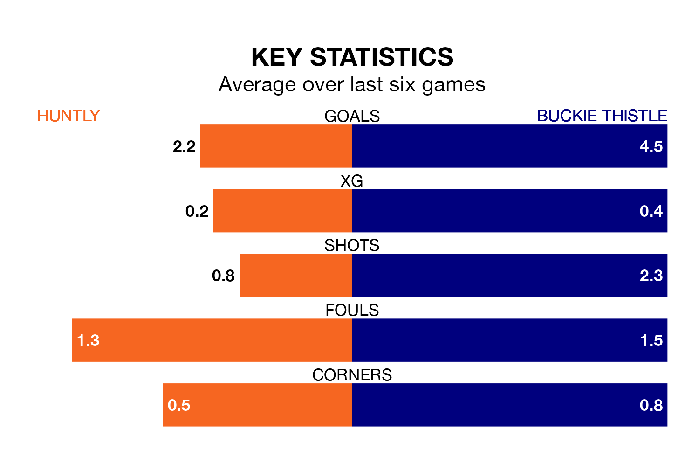

Huntly face a challenge to maintain their high-scoring form at home against a tight Buckie Thistle defence on Saturday.
With 48 goals in 18 games, Huntly are the third-highest scorers in Highland and Lowland Football Leagues ahead of the 3pm kick-off at Christie Park.
They face a Buckie Thistle side who have scored 44 in 13 matches, but conceded only 12 goals, putting them third among the league's tightest defences – only Brechin City and Brora Rangers have conceded fewer goals.
Huntly are in mixed form in Highland and Lowland Football Leagues, with two wins and a draw from their last six games.
With six wins and no losses over that period, Buckie Thistle's form is much better – they have taken 18 points from 18, compared to the hosts' seven.
Huntly are 15th in the table after 18 games, of which they have won nine and drawn three, earning 30 points.
The away side are four places ahead of Huntly in 11th, with 11 wins and one draw putting them on 34 points.
In the last five years, Huntly and Buckie Thistle have played each other on five occasions. Huntly won one of them, Buckie Thistle three, and they drew once.
On average, Huntly scored 1.4 goals and Buckie Thistle 2.6 in those matches.
Their last meeting was on September 2, when Buckie Thistle won 3-0 at home.
Huntly's last match was on January 6, a 2-1 loss against Inverurie Loco Works, with Michael Dangana getting the goal for Huntly.
Buckie Thistle beat Forres Mechanics 8-1 last time out, on December 30, with Darryl McHardy (two), Jack Murray (two), Scott Adams (two), Lyall Keir and Max Barry on the scoresheet.
Updated: 15:34, 08/01/24